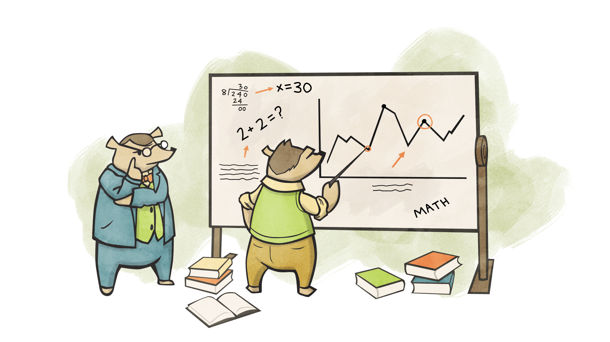
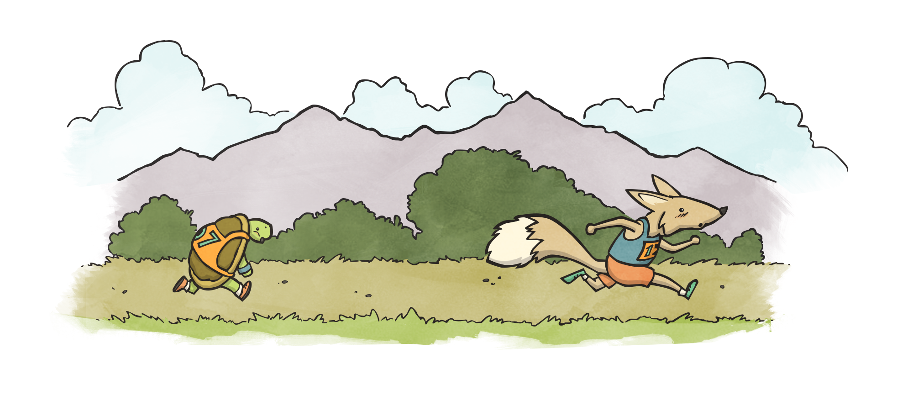
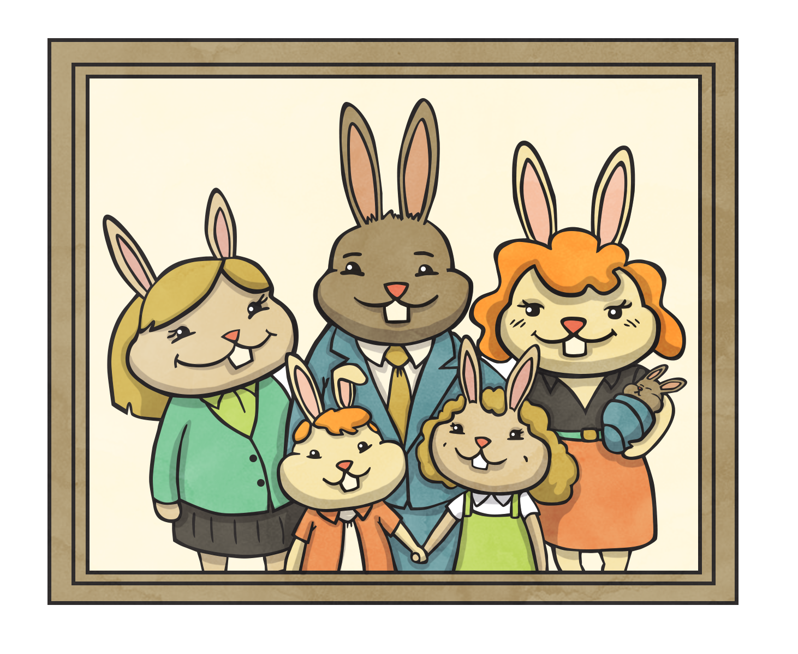
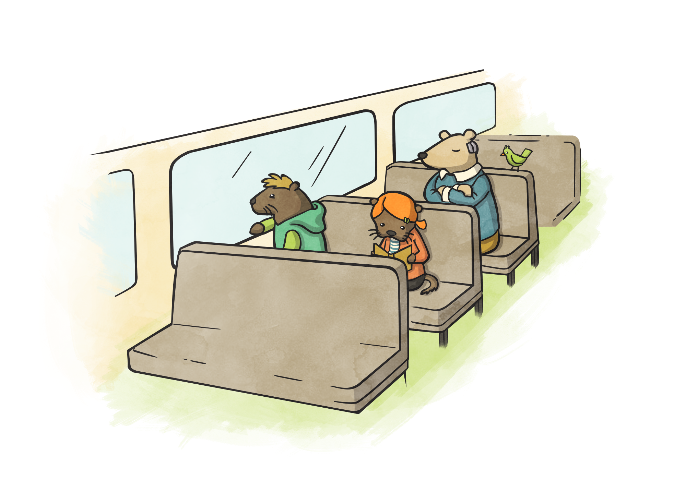
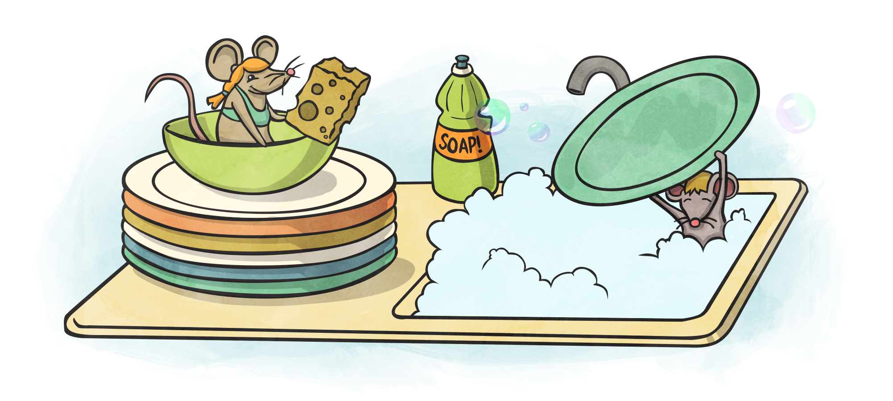
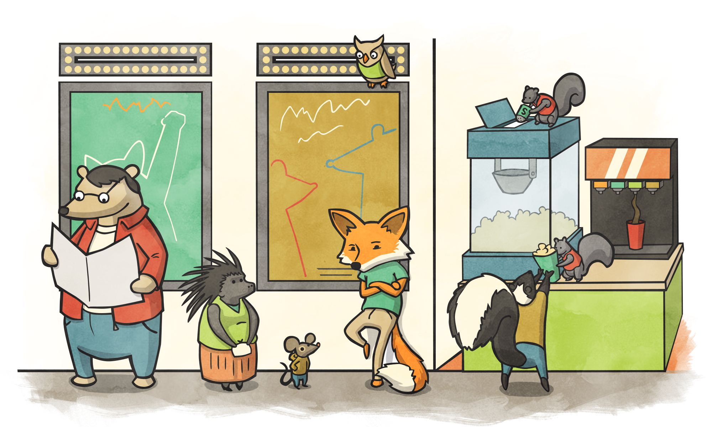
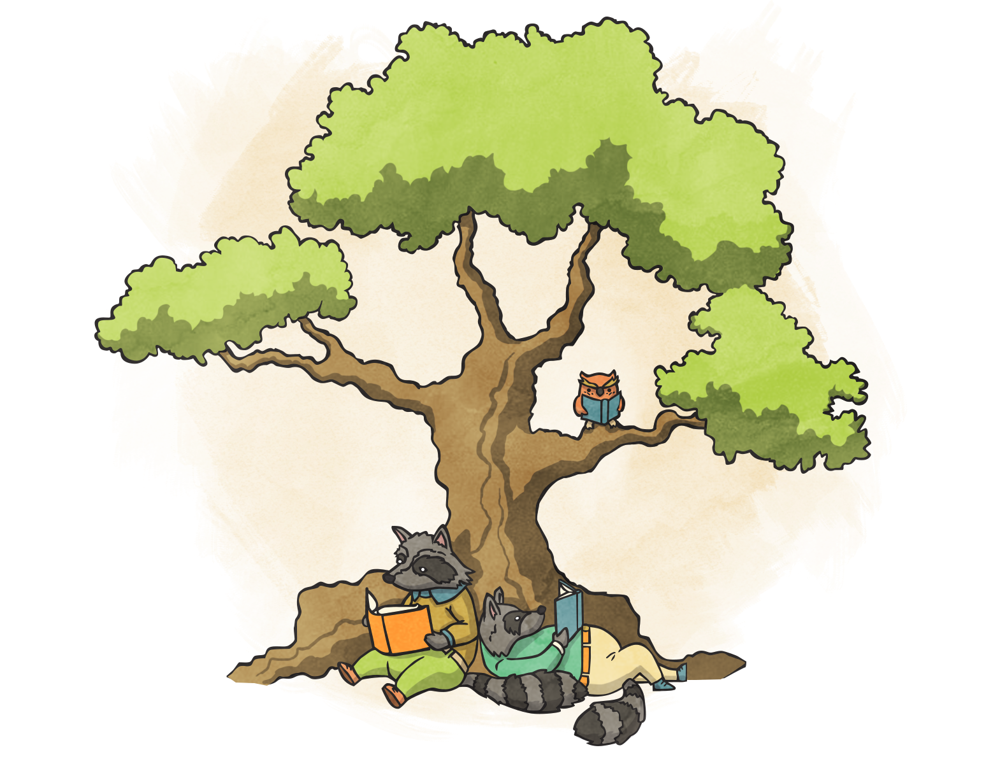
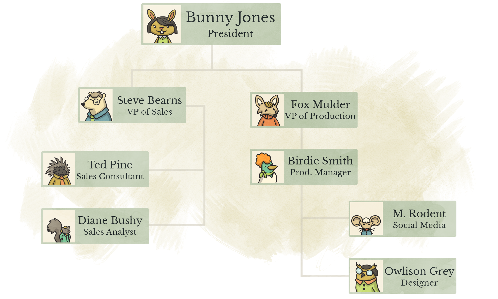

This text is a primer for learning algorithms and data structures. Each example is done in JavaScript. It is intended for those coming from a coding bootcamp background looking into more academic study, those looking for a refresher or for those about to undertake a Computer Science program. It does not go in depth but points the way.
If you're brand new to programming, I suggest Codecademy's course on JavaScript and/or the first four chapters of Eloquent JavaScript.
In addition, I suggest being able to run code in the examples. This can be done in your browser, using Node or a site such as repl.it.
Illustrations by Chickadee Games.
If you feel so inclined, Square Cash or Venmo works. Please, don't send more than $5, the price of an overpriced cup of coffee.

"Big O", or "Big O Notation", is a term used to describe a wider field of study. It is notation and related math that allows us to denote how big and how slow our programs are. Whether it be a video game, launching a rocket, a phone app or this web page, we want our apps to run fast and use as little memory as possible. Therefore, Big O is a notation that states the worst case scenario, or a "high water mark".
There are other notations (omega and theta), and they're interesting and I highly encourage you to read about them but for our purposes, and the practical purposes of writing code, we will solely focus on O (Big O).
Below are some examples of Big O Notation (also called the Bachmann-Landau notation).
O(1), pronounced "Oh of one", means our program executes immediately, or in constant time, the same time in which our program was run. Regardless of the size of our data. Examples of this are conditionals and assignment.
var x = 5
if (x == 5) {
console.log('x is five!')
}
Our program does not have to loop. We assigned x, and we put it through a conditional.
n is the number of items in our input. If we don't know exactly the number of items in our input to our program, as in algebra, we use n by convention to denote it.
Our program will grow to the size of our input. This is called linear growth, where the number of operations our program has is in direct correlation to the input. In the below program, we would have to hypothetically go through every item in the collection to determine whether or not it is 5, in the worst case scenario. Hence, O(n).
array = [ ? ] // an Array of unknown length
for (var i = 0; i < array.length; i++) {
if (array[i] == 5) {
return i
}
}
While O(n) grows to the same size as our input, O(n2) grows to the square of our input. Meaning, if our input is a list of 4 items, we may have up to 16 operations. This usually comes about from the nesting of loops. The below code shows an example of this:
array = [ ? ] // an Array of unknown length
for (var i = 0; i < array.length; i++) {
for (var j = 0; j < array.length; j++) {
console.log('i is: ' + i)
console.log('j is: ' + j)
}
}
Another, perhaps more common example, that can occur during something like an API request or getting two distinct pices of data and then having to merge or alter them in some way.
array1 = [ ? ] // an Array of unknown length
array2 = [ ? ] // a separate Array of unknown length
for (var i = 0; i < array1.length; i++) {
for (var j = 0; j < array1.length; j++) {
console.log(array1[i] + array2[j])
}
}
If we have a triple nested loop, using this above example, as you may have guessed we could say O(n3).
While we can say that this should be O(n * m) as they are distinct Arrays. Which does seem more algebraic at first glance, by convention we say this is still O(n2).
The reason for this is, n is entirely unknown. m is also entirely unknown. They could be the same length, different, or having nothing them. Therefore m is theoretically the same as n in regards to a conceptual point of view on how our program speed will grow. Arguably, it makes it perhaps slightly easier to represent what is going on. For instance, what if we have 3 lists noted above? O(n m o) doesn't roll off the tongue as well as "Oh of n cubed".
O(log n) denotes that our program will grow with the log2 of n. There are quite a few divide-and-conquer algorithms that filter our inputs log2 times.
Logarithms can be thought of as "reverse exponents". For instance, 2^3 is 8. Therefore log28 is 3.
A great example of this is the binary-search algorithm.
There are O(n!) and O(2n) notations as well. They are interesting but less common.
When evaluating an entire program, we remove the constants.
a = [ ? ] // an Array of unknown length
for (var i = 0; i < array.length; i++) {
console.log(i)
}
for (var i = 0; i < array.length; i++) {
console.log(array[i])
}
We could say the above program would be O(2n). We have 2 loops, not nested, that iterate over our entire list. For Big O, we care about the trend or rather "how" our program grows. n, versus 2n, versus 100n, they all grow in linear time.
We drop the constant, the 2, and say our program's Big O is O(n).
Consider the below program:
array = [ ? ] // an Array of unknown length
for (var i = 0; i < array.length; i++) {
if (array[i] == 5) {
console.log('Found 5')
}
}
for (var i = 0; i < array.length; i++) {
for (var j = 0; j < array.length; j++) {
if (j == i) {
console.log('Found an interesting match!')
}
}
}
for (var i = 0; i < array.length; i++) {
for (var j = 0; j < array.length; j++) {
if (j == i) {
console.log('Found an interesting match again!')
}
}
}
There's a lot going on in this program.
array assignment runs in O(1)Mathematically, our program could look like:
O(1) + O(n) + O(n^2) + O(n^2)
We can then combine like terms:
O(1) + O(n) + 2O(n^2)
Drop our constants (remember, O(1) is considered "constant time"):
O(n) + O(n^2)
And finally, for this example, we use the largest Big O found to represent our whole program.
O(n^2)
We do this because, what if our program had nothing but super fast O(1) code but then we have our O(n2) loop? Our program has to run it and therefore, it becomes our "choke point". The slowest element that dictates the growth trend.

Big O Notation is important for any field of software development. With that said, it is also a very deep and involved field that requires a lot of time to understand. Below, I've posted some links that I suggest reading or at least glancing at. The important "tweet sized" takeaway from this section is:
Nested loops are something to stray away from whenever possible. We determine the Big O of our program by the slowest block found, regardless of how fast everything else is. Big O is an indication of growth, not an exact amount.
We have a jar of 100 marbles. 50 red. 50 blue. They are mixed up randomly in the jar, and we cannot see into the jar. We pull a marble at random.
We created a sorting algorithm for a list that works as follows:
Start at the beginning of the list
Traverse the list
Compare the current item, and the next, if there is one
If the current item is greater than the next, swap them
Do this "n" number of times
An example is, the list [ 5, 3, 7, 2, 1 ] would look like [ 5, 3, 2, 1, 7 ] after the first traversal.
Write code to reverse a String in O(n) time? (Meaning we go through the String only once). Your code should accept a String, such as "John", and return a String "nhoJ".
For a more advanced challenge, do not create a new String. Return the same String.
Merge sort runs in O(n * log n). Implement this sort in JavaScript, or another language of your choice. In addition, understand why, for this algorithm, we multiplied the run times instead of adding them together to determine the overall Big O.
And finally, see you if you can determine the Big O of the Stable Marriage Problem, before you Google the answer.

Recursion is an important part of this text for one major reason. Other data structures utilize recursion to solve their problems.
Perhaps you've run into an example of "stack level too deep" before. The base case is the section that tells our program to stop.
The counter to our base case. If the base case is not met, we run this side of the function.
Let's look at a simple counter program. It will count down from a number to 0.
function countdown(n) {
if (n < 0) {
return undefined
} else {
console.log(n)
return countdown(n-1)
}
}
Versus the same iterative solution
function countdown(n) {
for (var i = n; i >= 0; i--) {
console.log(i)
}
}
Our base case is if (n < 0). This is telling our program to stop when our condition is met. If it is absent, we will infinitely loop, counting down forever.
The recursive case did something, then returned a smaller version of the exact same program.
The goal of a recursive function is to continually call itself with a smaller and smaller problem until we meet our base case.
In the recursive case, you'll notice we're not returning a value but instead, an entirely newly invoked function. By this, we can assume that recursive functions do take up more memory than an iterative one. In addition, we can also trace the call stack, the order of functions called as until we get to a base case, none of these called functions returns.
Let's use a classic Fibonacci recursive function as an example. The Fibonacci sequence is:
n | 1 2 3 4 5
-----------------------
value | 1 1 2 3 5
And the code:
// abbreviated "fibonacci" to "fib"
function fib(n) {
if (n < 2) {
return n
} else {
return fib(n-1) + fib(n-2)
}
}
Lets trace fib(5). We know it should return 5.
fib(5)
/ \
fib(4) fib(3)
/ \ | \
fib(3) fib(2) fib(2) fib(1)
/ \ [1] [1] [1]
fib(2) fib(1)
[1] [1]
We can see the Tree structure that is created and see the 1's returned, 5 of them.
Technically, we haven't returned a value until each branch gets all the way to its base case. The values of each function then "bubble up" back to the original call of fib(5).
Recursion was needed a lot more in languages and frameworks that did not have proper loops as we know them today. It is still used in a variety of fields such as graphics in game development. In addition, throughout the coming chapters of this text we'll use recursion on data structures that leverage it well.
Quicksort is a divide and conquer algorithm.
Try calling our fib function with an argument of 100. You'll see that it'll take a very long time.
fib(100) in linear time (O(n)).Hint: it will not be a recursive function.
Write a function called multiply that accepts 2 numbers as arguments. Write this as a recursive function without using the * (multiply) operator.
function multiply(n, m) {
// code
}
multiply(8, 7) == 56 // true
We want to recursively print stars in a pyramid fashion (rotated 90 degrees to the right), using an asterisk "*". We want to write a function called starUp that accepts 2 arguments. The integer we start at and the integer we end at.
Example:
starUp(0, 3)
// returns
*
**
***
**
*
The only iterative part of your program is the below given helper function though bonus points if you implement a recursive solution of it:
function printStars(n) {
var stars = ''
for (var i = 0; i < n; i++) {
stars += '*'
}
console.log(stars)
}

Linked Lists are a reference based data structure. This is opposed to an indexed or key based data structure such as a JavaScript Array or Object. An example of this is a Linked List is a train.
We have our engine, and an arbitrary number of following cars. The nth car is reliant on the nth - 1 to stay connected. It does not "know" about the other cars in the train, just the one before it.
In a language like C, Arrays are instantiated as follows:
int integerArray[10]
This defines an Array, that only is allowed to possess Integers, and can have no more than 10 items in it. We were not allowed to just .push an arbitrary amount of items, of multiple types, into an Array like in JavaScript.
When we want to add items to this C Array, we would need to create a new one of double the length (by convention), copy over all the current items, and add the new ones, then delete the old Array.
This can get either tedious, or expensive, particularly based on the data.
Linked Lists are a way to keep adding items to an Array, without having to go through the whole protocol of Array doubling and copying.
// Array
0 1 2 3
[ 4, 5, 2, 7 ]
// Linked List
(4) -> (5) -> (2) -> (7)
Linked Lists are comprised of Nodes. A Node has a value (in the example above, an Integer), and a reference, which is always another Node. Some skeleton code for a Node is below.
function Node(val, ref) {
this.value = val
this.reference = ref
}
var n = new Node(1)
var m = new Node(2, n)
We could call methods like n.reference or n.value but we always need to remember that n is our first Node. Which can get tough in a program to remember. We need something to wrap all these Nodes and be able to call functions. This is where a Linked List object comes in.
Below is the LinkedList object, in conjunction with a recursive add function. By default, in our Linked List, we add to the end of the list. We call the first Node in the LinkedList the head. This is always our starting point for operating on a LinkedList due to our reference based structure.
function Node(val) {
this.value = val
this.reference = null
}
function LinkedList() {
this.head = null
this.add = function(val) {
if (this.head == null) {
this.head = new Node(val)
} else {
recursiveAdd(val, this.head)
}
}
// a closure to keep the concept of a "private" function
function recursiveAdd(val, node) {
if (node.reference == null) {
node.reference = new Node(val)
} else {
recursiveAdd(val, node.reference)
}
}
}
Instantiation and calling methods on our Linked List would look like:
ll = new LinkedList()
ll.add(1) // HEAD -> (1)
ll.add(2) // HEAD -> (1) -> (2)
// etc.
Using the Array [1,2,3] as an example. What if we wanted to add 4 in between the 2 and 3?
If we're in C, and have no more room, we need to do our double/copy/delete original function. If we're in JavaScript, or C when we have room, we need to then shift every element over in the Array, the place the item at the correct index. This is an O(n) function.
For a LinkedList, placing at the a new Node/value anywhere but the end of will be less than n operations. We can simply re-arrange the references. There is not shifting of Nodes.
// Pseudocode for addBefore(beforeVal, val)
Traverse Nodes
If the current Node's reference's value is equal to what we're looking for
The Node to be inserted's reference becomes the current Node's reference
The current Node's reference becomes the Node to be inserted
When we want to add on to our list, we need to iterate over the size of the list in order to get to the end, then append. It is an O(n) function.
In addition, retrieving a specific element is also an O(n) operation.
Because Arrays operate in an indexed fashion, and if it does not need to grow (such as a JavaScript or other scripting language Array), it is an O(1) operation.
Linked Lists are an important structure for allowing operations to be done and our list to be maintained in a better fashion than an Array, based on their use case.
Today, Ruby's Array, Python's List, Java's ArrayList and so forth are dynamic. They grow and resize for us and we don't need to need work about our C Array protocols. In addition, they have a lot of useful methods already built in. While they, Linked Lists, may go unused, other structures utilize them and are built off of Linked Lists (such as Trees). It is useful to understand the concept of a Linked List in order to grasp further concepts in this text.
Implement the above addBefore function. It should accept two arguments, the value to find and the value to add before the "found" value.
Implement remove. This function accepts one argument of a value to be removed from the LinkedList.
Hint: Be careful with references
Implement clear. This clears the Linked List, meaning it is empty.
Implement a "tail pointer" in a Linked List. In addition, add .previous to your Node object. This is called a "doubly linked list".

Stacks and Queues are two abstract data types. We can use various structures to represent them but what is most important, is their behavior that defines them and how we can use each respectively.
There are no code examples in this section but rather, just pseudocode.
A Stack is a "First In Last Out" (FILO) structure.
Examples of this are collecting and cleaning plates after a meal. When we collect a plate, we put it on the top of the previous plate and when we clean them, we take the one off the top first. Another, perhaps better, example is a can of Pringles or tennis ball sleeve. The first chip in, is the last one out.
Stacks have three primary functions.
.push(item), which adds the item on to the Stack.pop(), which removes the top item off the Stack.peek(), which examines the top item off of the StackYou'll notice that these functions already exist within JavaScript's Array. Modern programming languages have enabled this behavior, merging it in to the Dynamic Arrays linked in the previous chapter.
Another example of a Stack is the "Undo" function on your computer. When you type something in, its pushed on to your computer's memory Stack. When (usually) Ctrl/Cmd + Z is invoked, it pops off the last item in the Stack and reverts us back to where we were.

Queues differ slightly in that they are a "First In First Out" (FIFO) data structure, as the name implies. Think of a movie theater line. The first person in line, gets their ticket first.
There are four functions that we want for our Queue
.enqueue(item), which puts an item to the back of the line.dequeue(), remove the first item in the Queue and moves all further items up.first(), examines the first item in line.last(), examines the last item in lineWhy use these structures? They're already built in to the language that I'm using!
This is a valid question but as noted before, the behavior of each and when to use them, even if they're incorporated into the language that we currently use.
Though you may end up with an Array, we would be using its Stacks or Queue behavior.
Use a Linked List (ref: previous chapter), to create a Stack.
Use a Linked List (ref: previous chapter), to create a Queue.
Using 2 Stacks, create a Queue. Below is an example of skeleton code that you would need to leverage.
function Queue() {
this.stack1 = new Stack()
this.stack2 = new Stack()
}
Using a Stack and recursion, write code to determine whether or not brackets are valid for code, represented as a String.
var input = "ary = [1,2,3]; for (var i = 0; i < ary.length; i++) { console.log(ary[i]) }"
Your function should return a Boolean, and accept a a String.
Determine a way to create a Priority Queue, where 1 is the highest priority.
It operates as a queue, though if we have something with the highest priority in our queue it must be dequeue'd first.
For instance:
{ priority: 3, value 5 }{ priority: 1, value 2 }{ priority: 2, value 1 }When we dequeue, { priority: 1, value 2 } will be the first item to be returned, though the second entered into the Priority Queue.
An example of this is Amazon, or other vendors. If you pay a bit more, you get a higher priority on your order.

Trees, at first glance, are very similar to Linked Lists. They are comprised of Nodes, just like a Linked List but they have two main differences.
Fig. 1
(A)
/ \
(B) (C)
/ \
(D) (E)
Instead of a head, we have a root, our Node labeled A. A's children (not references) are B and C. There B and C's parent is A. We would say our "leaf Nodes", Nodes that have no children, are D and E. In addition, D and E have a common ancestor in A.
In addition, this Tree would have a depth of 2. We can also have a Tree that looks like the below. Unless we specify a type of Tree, by default there are no limit to the number of children per Node but a Tree is always defined by having a root.
The above figure is a very simple Tree. Each Node (called TreeNode for this instance) would look like the below, in code:
function TreeNode(value) {
this.value = value
this.children = []
}
Fig. 2
(A)
/ | \
(B) (C) (D)
Breadth First Search (BFS) is an algorithm that goes through our Tree, in each level, and returns and/or examines in the Nodes, by level of the Tree.
For instance, in Fig. 1, we would return the following order: A, B, C, __D, E.
When our Tree is very wide, this algorithm can be a bit slow but may be advisable to use when our Tree is a skinny and has many levels.
Depth First Search (DFS) is an algorithm that goes through our Tree, getting all the way to the bottom, then coming back up, going through each first child, recursively, labeling it discovered and moving on to the next.
In Fig. 2, we would return the following order: A, B, D, C, E.
Notice the difference from BFS, where we get to the bottom of the Tree quickly. This is optimal for a shallow Tree, that may be a bit on the wider side.
Binary Trees put some conditions are our Nodes.
left_child must have a lesser value than the parentright_child must have an equal or greater value than the parentAn example of our Binary Tree Node (BTNode) would look like, in code:
function BTNode(value) {
this.value = value
this.left_child = null
this.right_child = null
}
And we will use a BinaryTree wrapper Object around our Nodes, much like our Linked List chapter.
function BinaryTree() {
this.root = null
this.add = function(value) {
if (this.root == null) {
this.root = new BTNode(value)
} else {
recursiveAdd(this.root, value)
}
}
function recursiveAdd(node, value) {
if (value >= node.value) {
if (node.right_child == null) {
node.right_child = new BTNode(value)
} else {
recursiveAdd(node.right_child, value)
}
} else {
if (node.left_child == null) {
node.left_child = new BTNode(value)
} else {
recursiveAdd(node.left_child, value)
}
}
}
}
Like our LinkedList, we can utilize recursion for additions to our Binary Tree.

Morse Code is an alphabet broken up into dashes and dots. It is actually broken into a Binary Tree structure.
Using the image provided, implement a Morse reader, that accepts a String as an argument
Implement a delete(value) method on our BinaryTree.
Based on the Wikipedia Pseudocode, implement BFS on a Tree.
Based on the Wikipedia Pseudocode, implement DFS on a Tree.
Trees are an important data structure. The DOM in this webpage is a Tree. MongoDB, a popular No-SQL database, uses Trees. Object hierarchy and understanding inheritance as it pertains to programming can be displayed with a Tree.
Understanding them is important and leads into further data structures, such as the below mentioned Graphs.
Graphs, to keep it short, are a "root-less" Tree. There is no one single starting point. They have Vertices (instead of Nodes) and Edges (instead of Children). They can be directional:
// B is an Edge to A but A is not an Edge to B
(A) -> (B)
Bi-directional:
// A and B are Edges to each other
(A) <-> (B)
or even contain a cycle:
// A to B to C to A ... etc.
(A) -> (B)
^ /
\ v
(C)
LinkedIn, your friends on Twitter or Facebook and other popular apps all utilize a Graph in order to give you "2nd degree relationships" and so forth.
In addition, we can use our DFS/BFS algorithms to search for a Vertex. For the purpose overall of this text, I won't go into them too much but if you have the time and are interested, I highly recommend checking it out.
We can also weight the Edges in a Graph. This allows us to represent travel time, scheduling and other applications.
{kind=link}